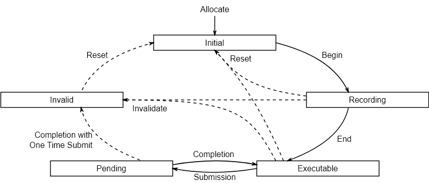
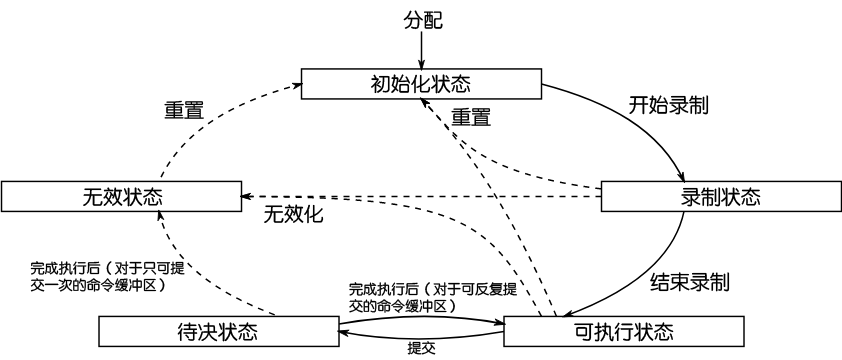

Ch3-5 命令缓冲区
命令缓冲区（VkCommandBuffer）用于录制命令，而命令池（VkCommandPool）用于分配命令缓冲区。
命令缓冲区并不代表命令池中大小和位置确定的某块区域，它是根据录制的命令内容动态变化的，由命令池管理，命令池本身也是动态大小的。
在多线程中录制命令缓冲区时，必须给每个线程一个不同的命令池（而不是从同一个命令池中为每个线程分配不同的命令缓冲区），以避免访问冲突。
Command Buffer
命令缓冲区有两个级别：一级命令缓冲区和二级命令缓冲区。
一级命令缓冲区可以被直接提交给队列。
二级命令缓冲区必须从一级命令缓冲区执行，跟函数调用不太一样，二级命令缓冲区在开始录制时需指定继承信息（包含渲染通道在内的一些上下文参数），并非录制完以后可以被任何一级缓冲区调用。
对于有多个子通道的渲染通道，通过在主线程中录制一级命令缓冲区，另一线程中将某个子通道中的命令录制在二级命令缓冲区中，可能可以在一定程度上缩减CPU一侧的执行时间。
命令缓冲区的生命周期
 -
如图所示，提交命令缓冲区之后、命令执行完之前的状态为待决状态（提一下以强调）。
-
若命令缓冲区中涉及到的Vulkan对象被销毁，则命令缓冲区从录制或可执行状态进入无效状态。
-
对于可反复录制（从指定了VK_COMMAND_POOL_CREATE_RESET_COMMAND_BUFFER_BIT的命令池中分配）且每次录制完只提交一次（开始录制时指定VK_COMMAND_BUFFER_USAGE_ONE_TIME_SUBMIT_BIT）的命令缓冲区，执行完以后可以手动将其重置，但通常不需要这么干，重新录制命令缓冲区时会将其自动重置到初始化状态（然后紧跟着进入录制状态）。
Note
对于某些早期的Vulkan实现，提交命令缓冲区时必须附带一个栅栏（哪怕你用了其他同步手段比如信号量），才能使命令缓冲区在执行结束后从待决状态回到可执行状态或进入无效状态。这在标准中没有规定，可能是bug。这个问题大概只有在多线程中使用时间线信号量的场合需要处理，如果发生了的话建议更新显卡驱动。
关于分配、释放、重置命令缓冲区的相应函数，见后文关于命令池的说明。
提交命令缓冲区
用vkQueueSubmit(...)向队列提交命令缓冲区：
VkResult VKAPI_CALL vkQueueSubmit(...) 的参数说明 |
|
|---|---|
VkQueue queue |
队列的handle |
uint32_t submitCount |
命令提交信息的个数 |
const VkSubmitInfo pSubmits |
指向命令提交信息的数组 |
VkFence fence |
命令全部执行完后所需置位的栅栏的handle（非必要，可为VK_NULL_HANDLE） |
struct VkSubmitInfo 的成员说明 |
|
|---|---|
VkStructureType sType |
结构体的类型，本处必须是VK_STRUCTURE_TYPE_SUBMIT_INFO |
const void* pNext |
如有必要，指向一个用于扩展该结构体的结构体 |
uint32_t waitSemaphoreCount |
所需等待被置位的信号量的个数 |
const VkSemaphore* pWaitSemaphores |
指向所需等待被置位的信号量的数组 |
const VkPipelineStageFlags* pWaitDstStageMask |
所指数组用于说明对pWaitSemaphores所指各个信号量的等待在哪些阶段前完成 |
uint32_t commandBufferCount |
所需提交的命令缓冲区的个数 |
const VkCommandBuffer* pCommandBuffers |
指向所需提交的命令缓冲区的数组 |
uint32_t signalSemaphoreCount |
命令执行结束后需被置位的信号量的个数 |
const VkSemaphore* pSignalSemaphores |
指向命令执行结束后需被置位的信号量的数组 |
-
若提供了所需等待的信号量，提交命令缓冲区会定义对信号量的等待操作（注意，意思是在命令执行过程中达到特定阶段前完成等待，而不是在命令开始执行前）。
有一点略微需要注意，等待信号量的操作未必会发生在所指定的阶段。
官方标准里的注释项（见此）中有写到：
Some implementations may be able to execute transfer operations and/or pre-rasterization work before the semaphore is signaled.
译文：有些实现可能可以在信号量被置位前执行转移操作，以及/或栅格化前的工作。
这意味若命令缓冲区中包含图形命令，即便你指定的等待阶段早于或包含VK_PIPELINE_STAGE_EARLY_FRAGMENT_TESTS_BIT（前期片段测试阶段，是栅格化后的第一个阶段），也应当将其视作等同于VK_PIPELINE_STAGE_EARLY_FRAGMENT_TESTS_BIT，总是应该保证，在片段着色器前的任何着色器中涉及的资源（片段着色器前的话，通常是顶点数据/uniform数据），必须在提交命令缓冲区前完成其写入。
（其实这不是什么要特别注意的点，除非你故意用一些很麻烦的写法，比如在提交更新数据用的命令缓冲区时使用二值信号量而非栅栏来同步）
总结，用vkQueueSubmit(...)提交命令缓冲区后，剧本流程如下：
1.若指定了需要等待的信号量，定义对信号量的等待操作。
2.命令开始执行，等执行到相应等待阶段（或可能延后到栅格化后），等待信号量。
3.所需等待的信号量被置位后，继续执行后续操作，直至完成命令的执行。
4.置位所需置位的信号量和栅栏。
开始和结束录制命令缓冲区
用vkBeginCommandBuffer(...)开始录制命令缓冲区：
VkResult VKAPI_CALL vkBeginCommandBuffer(...) 的参数说明 |
|
|---|---|
VkCommandBuffer commandBuffer |
命令缓冲区的handle |
const VkCommandBufferBeginInfo* pBeginInfo |
指向命令缓冲区的开始信息 |
struct VkCommandBufferBeginInfo 的成员说明 |
|
|---|---|
VkStructureType sType |
结构体的类型，本处必须是VK_STRUCTURE_TYPE_COMMAND_BUFFER_BEGIN_INFO |
const void* pNext |
如有必要，指向一个用于扩展该结构体的结构体 |
VkCommandBufferUsageFlags flags |
|
const VkCommandBufferInheritanceInfo* pInheritanceInfo |
指向二级命令缓冲区的继承信息 |
版本要求 |
|
|---|---|
1.0 |
VK_COMMAND_BUFFER_USAGE_ONE_TIME_SUBMIT_BIT 表示该命令缓冲区只会被提交一次，然后就会被被重置（重新录制当然也算）/释放 |
1.0 |
VK_COMMAND_BUFFER_USAGE_RENDER_PASS_CONTINUE_BIT 仅用于二级命令缓冲区，表示所录制命令被完全包含在某个渲染通道内，若使用该bit，继承信息中提供的renderPass必须有效 |
1.0 |
VK_COMMAND_BUFFER_USAGE_SIMULTANEOUS_USE_BIT 表示该命令缓冲区可以在待决状态下（即还没执行完时）被重新提交 |
VkCommandBufferInheritanceInfo的解说见后文。
用vkEndCommandBuffer(...)结束录制命令缓冲区，单个参数为命令缓冲区的handle。
二级命令缓冲区
//TODO 暂时用不着所以VkCommandBufferInheritanceInfo也先不写了。
单线程里用处不大，相关示例可能要等我写到阴影。
封装为commandBuffer类
向VKBase.h，vulkan命名空间中添加以下代码：
class commandBuffer { friend class commandPool;//封装命令池的commandPool类负责分配和释放命令缓冲区，需要让其能访问私有成员handle VkCommandBuffer handle = VK_NULL_HANDLE; public: commandBuffer() = default; commandBuffer(commandBuffer&& other) noexcept { MoveHandle; } //因释放命令缓冲区的函数被我定义在封装命令池的commandPool类中，没析构器 //Getter DefineHandleTypeOperator; DefineAddressFunction; //Const Function //这里没给inheritanceInfo设定默认参数，因为C++标准中规定对解引用空指针是未定义行为（尽管运行期不必发生，且至少MSVC编译器允许这种代码），而我又一定要传引用而非指针，因而形成了两个Begin(...) result_t Begin(VkCommandBufferUsageFlags usageFlags, VkCommandBufferInheritanceInfo& inheritanceInfo) const { inheritanceInfo.sType = VK_STRUCTURE_TYPE_COMMAND_BUFFER_INHERITANCE_INFO; VkCommandBufferBeginInfo beginInfo = { .sType = VK_STRUCTURE_TYPE_COMMAND_BUFFER_BEGIN_INFO, .flags = usageFlags, .pInheritanceInfo = &inheritanceInfo }; VkResult result = vkBeginCommandBuffer(handle, &beginInfo); if (result) outStream << std::format("[ commandBuffer ] ERROR\nFailed to begin a command buffer!\nError code: {}\n", int32_t(result)); return result; } result_t Begin(VkCommandBufferUsageFlags usageFlags = 0) const { VkCommandBufferBeginInfo beginInfo = { .sType = VK_STRUCTURE_TYPE_COMMAND_BUFFER_BEGIN_INFO, .flags = usageFlags, }; VkResult result = vkBeginCommandBuffer(handle, &beginInfo); if (result) outStream << std::format("[ commandBuffer ] ERROR\nFailed to begin a command buffer!\nError code: {}\n", int32_t(result)); return result; } result_t End() const { VkResult result = vkEndCommandBuffer(handle); if (result) outStream << std::format("[ commandBuffer ] ERROR\nFailed to end a command buffer!\nError code: {}\n", int32_t(result)); return result; } };
Command Pool
创建命令池
用vkCreateCommandPool(...)创建命令池：
VkResult VKAPI_CALL vkCreateCommandPool(...) 的参数说明 |
|
|---|---|
VkDevice device |
逻辑设备的handle |
const VkCommandPoolCreateInfo* pCreateInfo |
指向VkCommandPool的创建信息 |
const VkAllocationCallbacks* pAllocator |
|
VkCommandPool* pCommandPool |
若执行成功，将命令池的handle写入*pCommandPool |
struct VkCommandPoolCreateInfo 的成员说明 |
|
|---|---|
VkStructureType sType |
结构体的类型，本处必须是VK_STRUCTURE_TYPE_COMMAND_POOL_CREATE_INFO |
const void* pNext |
如有必要，指向一个用于扩展该结构体的结构体 |
VkCommandPoolCreateFlags flags |
见后文 |
uint32_t queueFamilyIndex |
队列族索引 |
-
自Vulkan1.0以来，flags中可以设置VK_COMMAND_POOL_CREATE_TRANSIENT_BIT，意为从命令池中分配的命令缓冲区都是短命鬼，用一次没多久后就会被重置或free掉。
-
自Vulkan1.0以来，flags中可以设置VK_COMMAND_POOL_CREATE_RESET_COMMAND_BUFFER_BIT，意为从命令池中分配的命令缓冲区可以被重置，若要多次向同一命令缓冲区录制命令，须指定该bit。
-
从命令池中分配的命令缓冲区，必须被提交给queueFamilyIndex所示队列族中的队列。即，所创建的命令池将是索引为queueFamilyIndex的队列族专用的。
分配命令缓冲区
用vkAllocateCommandBuffers(...)分配命令缓冲区：
VkResult VKAPI_CALL vkAllocateCommandBuffers(...) 的参数说明 |
|
|---|---|
VkDevice device |
逻辑设备的handle |
const VkCommandBufferAllocateInfo* pAllocateInfo |
指向VkCommandBuffer的分配信息 |
VkCommandBuffer* pCommandBuffers |
若执行成功，将命令缓冲区的handle写入pCommandBuffers所指数组 |
struct VkCommandBufferAllocateInfo 的成员说明 |
|
|---|---|
VkStructureType sType |
结构体的类型，本处必须是VK_STRUCTURE_TYPE_COMMAND_BUFFER_ALLOCATE_INFO |
const void* pNext |
如有必要，指向一个用于扩展该结构体的结构体 |
VkCommandPool commandPool |
命令池的handle |
VkCommandBufferLevel level |
所需分配的命令缓冲区的级别，VK_COMMAND_BUFFER_LEVEL_PRIMARY为一级命令缓冲区，VK_COMMAND_BUFFER_LEVEL_SECONDARY为二级命令缓冲区 |
uint32_t commandBufferCount |
所需分配的命令缓冲区的个数 |
释放命令缓冲区
用vkFreeCommandBuffers(...)释放命令缓冲区：
VkResult VKAPI_CALL vkFreeCommandBuffers(...) 的参数说明 |
|
|---|---|
VkDevice device |
逻辑设备的handle |
VkCommandPool commandPool |
命令池的handle |
uint32_t commandBufferCount |
所需释放的命令缓冲区的个数 |
const VkCommandBuffer* pCommandBuffers |
指向由所需释放的命令缓冲区的handle构成的数组 |
通常而言你不需要手动释放命令缓冲区，销毁命令池时，会回收从中分配的所有命令缓冲区。
重置命令缓冲区
对于可以被重置的命令缓冲区，每次重新录制命令时，命令缓冲区会被自动重置。
用vkResetCommandBuffer(...)显式地重置命令缓冲区，使得命令缓冲区的状态变为初始化状态：
VkResult VKAPI_CALL vkResetCommandBuffer(...) 的参数说明 |
|
|---|---|
VkCommandBuffer commandBuffer |
所需重置的命令缓冲区的handle |
VkCommandBufferResetFlags flags |
|
-
自Vulkan1.0以来，flags中可以设置VK_COMMAND_BUFFER_RESET_RELEASE_RESOURCES_BIT，意为回收分配给命令缓冲区的内存，若不注明该bit，已分配的内存将被用于下一次录制
重置命令池
用vkResetCommandPool(...)重置整个命令池，这将导致所有从该命令池中分配的命令缓冲区的状态变为初始化状态：
VkResult VKAPI_CALL vkResetCommandPool(...) 的参数说明 |
|
|---|---|
VkCommandPool commandPool |
所需重置的命令池的handle |
VkCommandPoolResetFlags flags |
|
-
自Vulkan1.0以来，flags中可以设置VK_COMMAND_POOL_RESET_RELEASE_RESOURCES_BIT，意为将为命令池分配的内存交还给系统，若不注明该bit，已分配的内存将被用于之后的录制
封装为commandPool类
向VKBase.h，vulkan命名空间中，commandBuffer的定义后添加以下代码：
class commandPool { VkCommandPool handle = VK_NULL_HANDLE; public: commandPool() = default; commandPool(VkCommandPoolCreateInfo& createInfo) { Create(createInfo); } commandPool(VkCommandPoolCreateFlags createFlags, uint32_t queueFamilyIndex) { Create(createFlags, queueFamilyIndex); } commandPool(commandPool&& other) noexcept { MoveHandle; } ~commandPool() { DestroyHandleBy(vkDestroyCommandPool); } //Getter DefineHandleTypeOperator; DefineAddressFunction; //Const Function result_t AllocateBuffers(arrayRef<VkCommandBuffer> buffers, VkCommandBufferLevel level = VK_COMMAND_BUFFER_LEVEL_PRIMARY) const { VkCommandBufferAllocateInfo allocateInfo = { .sType = VK_STRUCTURE_TYPE_COMMAND_BUFFER_ALLOCATE_INFO, .commandPool = handle, .level = level, .commandBufferCount = uint32_t(buffers.Count()) }; VkResult result = vkAllocateCommandBuffers(graphicsBase::Base().Device(), &allocateInfo, buffers.Pointer()); if (result) outStream << std::format("[ commandPool ] ERROR\nFailed to allocate command buffers!\nError code: {}\n", int32_t(result)); return result; } result_t AllocateBuffers(arrayRef<commandBuffer> buffers, VkCommandBufferLevel level = VK_COMMAND_BUFFER_LEVEL_PRIMARY) const { return AllocateBuffers( { &buffers[0].handle, buffers.Count() }, level); } void FreeBuffers(arrayRef<VkCommandBuffer> buffers) const { vkFreeCommandBuffers(graphicsBase::Base().Device(), handle, buffers.Count(), buffers.Pointer()); memset(buffers.Pointer(), 0, buffers.Count() * sizeof(VkCommandBuffer)); } void FreeBuffers(arrayRef<commandBuffer> buffers) const { FreeBuffers({ &buffers[0].handle, buffers.Count() }); } //Non-const Function result_t Create(VkCommandPoolCreateInfo& createInfo) { createInfo.sType = VK_STRUCTURE_TYPE_COMMAND_POOL_CREATE_INFO; VkResult result = vkCreateCommandPool(graphicsBase::Base().Device(), &createInfo, nullptr, &handle); if (result) outStream << std::format("[ commandPool ] ERROR\nFailed to create a command pool!\nError code: {}\n", int32_t(result)); return result; } result_t Create(VkCommandPoolCreateFlags createFlags, uint32_t queueFamilyIndex) { VkCommandPoolCreateInfo createInfo = { .flags = createFlags, .queueFamilyIndex = queueFamilyIndex }; return Create(createInfo); } };